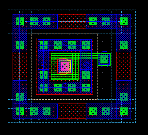
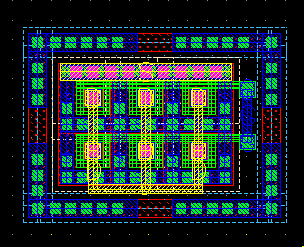
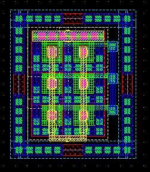
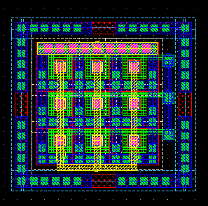

nfetswitch row and col properties
these layouts show the effect of varying row and col properties for an example nfetswitch
row = 1 col = 1 (default)

row = 2 col = 3

row = 3 col = 2

row = 3 col = 3
